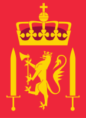
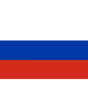
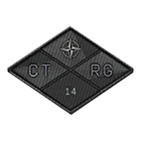

Immediate Situation: Copenhagen Seized
The decades of Scandinavian peace have violently ended in a stunning escalation by Norway against its neighbors. The immediate, devastating result has been the seizure of the Danish capital, Copenhagen, to create a strategic choke point.
The Pretext: A Greater Norway
The political junta cites ancient territorial claims related to the dissolution of the Kalmar Union to justify their aggression against Denmark, Sweden, and Finland.
The timing capitalizes on the internal fracturing and resource strain within NATO, which was calculated to prevent a timely, unified counter-response.
The Goal: Baltic Sea Lockdown
The primary strategic objective was the seizure of the islands surrounding Sjælland and Copenhagen for absolute command of the Danish straits.
By occupying this key crossing point, the Norwegian-led forces have cut off the essential NATO naval support and resupply lanes to the entire Baltic Sea, rendering the eastern flank exposed.
Conflict Timeline
Norway Declares War
Cites ancient claims, exploits perceived NATO weakness.
Copenhagen Seized
Tripartite coalition secures Danish straits, creating a choke point.
Baltic Sea Cut Off
Russian naval assets enforce sea denial from Kaliningrad.
NATO Responds
Operation Fractured Bolt greenlit to reopen the straits.
Faction Analysis: The Opposing Forces
The Tripartite Coalition is a complex grouping, with each member providing a non-redundant, critical component to the war effort. The chart below visually breaks down their contributions, focusing on resources.
Aggressor: Tripartite Coalition
Norwegian Army
Role: Ground Force, Air Force & Crews
Provides the vast majority of personnel, high-mobility infantry, and all operational crews for heavy armor. Objective: permanent annexation of seized territories in Denmark and gains against Sweden/Finland.
Russian Federation
Role: Strategic Enabler
Supplies crucial fuel and heavy transport via northern routes. Uses naval assets from Kaliningrad for sea denial and Anti-Access/Area Denial in the southern Baltic.
UK Separatist Faction
Role: Armored Supplier
Led by rogue Scott Miller, this mercenary group supplies the coalition's heavy combat muscle: a significant fleet of modern IFVs and Main Battle Tanks (MBTs).
Coalition Resource Contribution
Strategic Theater: The Baltic Choke Point
The operation hinges on controlling a single, narrow geographic feature: Drakovac. The image below provides a visual overview of the aggressor forces and the resulting choke point, which completely isolates NATO allies in the Baltic Sea.